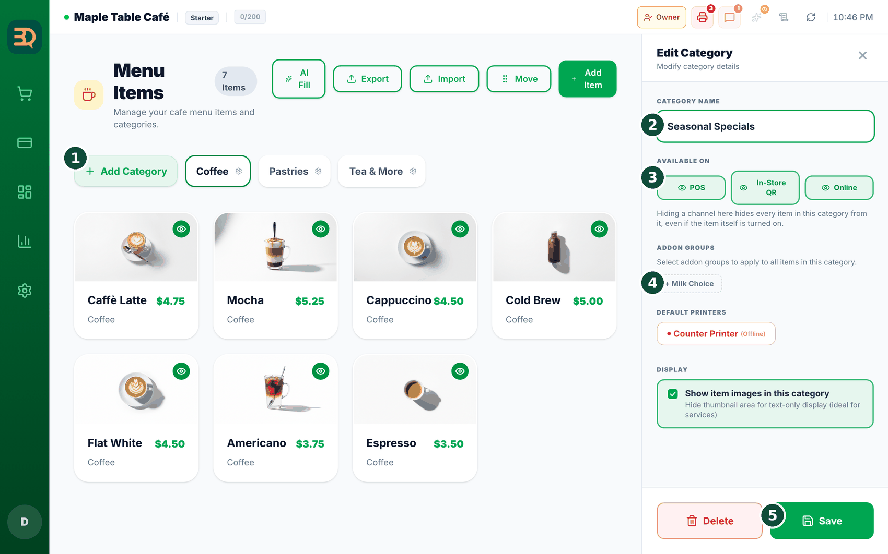
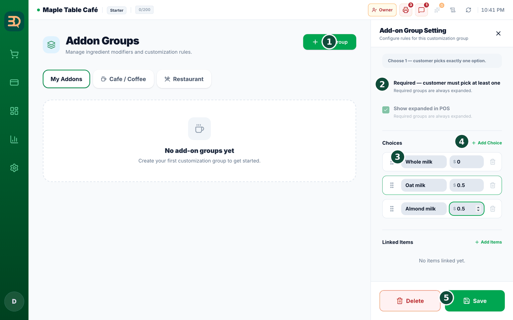
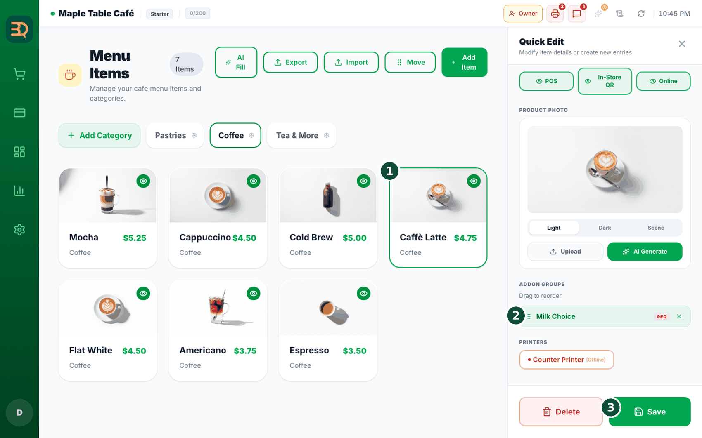
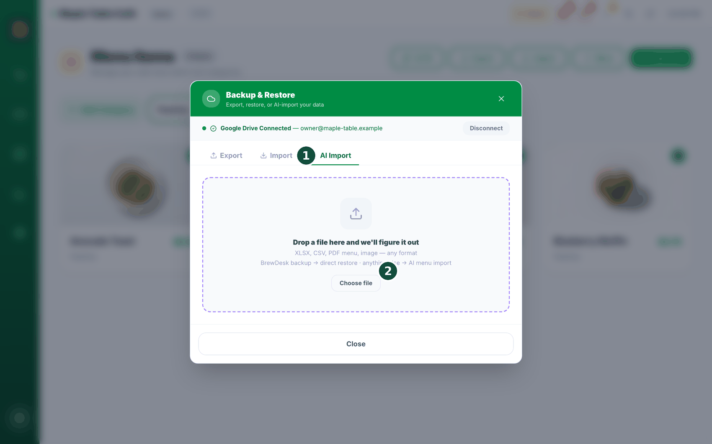
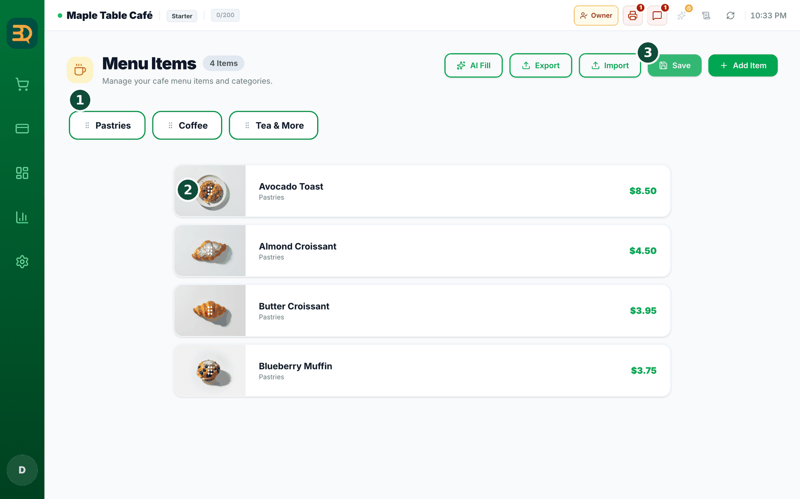

4메뉴 만들기
메뉴는 판매하는 상품의 목록으로, 주문 화면을 구성합니다. 상품을 추가하고 그룹으로 정리해 보겠습니다.
카테고리 · 상품

- 왼쪽 사이드바의 Manage(관리) › Menu Items(메뉴 항목)를 탭합니다. 오른쪽 위에 AI Fill, Export, Import, "Move", Add Item 버튼이 있고, 카테고리 탭 줄의 맨 왼쪽에 Add Category 버튼이 있습니다.

- 먼저 카테고리를 만듭니다. Add Category를 탭하고 "Coffee" 같은 이름을 입력해 저장합니다. (카테고리가 하나는 있어야 Add Item이 작동합니다.)

- Add Item을 탭합니다. 옆에 패널이 열립니다. 상품 이름, 설명(선택), 카테고리, 가격, 재고 상태("In Stock" 토글)를 입력합니다.

- 사진을 추가합니다. Upload로 본인의 사진을 사용하거나, AI Generate로 생성합니다.
- Save를 탭합니다. 상품이 해당 카테고리에 표시됩니다.
카테고리란 무엇인가요? 폴더와 같은 그룹입니다. 메뉴를 깔끔하게 정리해 상품을 쉽게 찾을 수 있게 합니다.
첫 주문 최소 수량. 품목 편집 창의 Min. quantity on first order(첫 주문 최소 수량) 칸에 2~99를 넣으면, 그 품목이 주문에 처음 담길 때 그 수량 이상이어야 합니다. 비워 두면 제한이 없습니다. 최소 수량보다 적으면 POS에서 주방으로 보낼 수 없고, 손님 QR 주문에서도 수량이 그 아래로 내려가지 않습니다.
판매 시간
아침 메뉴나 해피아워처럼 정해진 시간에만 팔 메뉴는 판매 시간을 지정해 두면 시간 밖에는 저절로 숨겨집니다.
여는 곳
카테고리 또는 상품 편집 창의 판매 시간 칸입니다. 선택지는 항상 판매와 시간 지정이며, 상품은 카테고리 따름 / 따로 지정 중에서도 고를 수 있습니다.
- 시간 지정을 고르고 요일과 시작·끝 시각을 입력합니다. 시간 구간 추가로 구간을 여러 개 만들 수 있습니다.
- 끝 시각이 시작보다 빠르면 다음날 그 시각까지로 읽습니다(예: 22:00~02:00).
- 저장합니다. 상품을 카테고리 따름으로 두면 카테고리 시간을 그대로 따릅니다.
시간 밖에는 어떻게 보이나요? 손님 주문(QR)과 스태프 오더 화면에서는 보이지 않고, 메인 포스에는 흐리게 판매 시간 아님으로 표시됩니다. 계산대에서 꼭 팔아야 한다면 상품을 눌렀을 때 나오는 "지금은 판매 시간이 아니에요" 창에서 이번만 판매를 눌러 이번 주문에만 판매할 수 있습니다. 직원 PIN으로는 승인할 수 없고 매니저나 사장님 PIN이 필요합니다.
매장 시간대를 먼저 설정해 주세요. 판매 시간은 매장 시간대 기준이며, 시간대가 비어 있으면 적용되지 않습니다.
옵션 그룹 · 프리셋
영상으로 보기

메뉴 옵션 설정하기 (사이즈·우유·토핑)
짧은 영상

사이즈마다 다른 가격 옵션

핫·아이스 꼭 고르게 하기

한 잔에 샷 두 번 추가

토핑 최소 1개, 최대 3개

옵션 그룹 하나로 여러 음료에

메뉴 상품에서 바로 옵션 추가


- 선택지를 제공하려면 상품 패널에서 옵션 그룹(우유나 사이즈 같은)을 연결합니다. Add Group으로 그룹을 만들고, 타입(Single / Multi / Quantity)을 선택한 뒤 가격과 함께 선택지를 추가합니다.
미리 만들어진 옵션 그룹. 그룹을 처음부터 만들기 번거롭다면 상품 패널에서 "프리셋에서 추가(Add from Presets)"를 탭합니다. 프리셋 라이브러리(Preset Library)가 열리며, 카페용 우유(Milk)·사이즈(Size)·온도(Temperature)·당도(Sweetness), 식당용 맵기(Spice)·단백질(Protein)·사이드(Sides) 같은 완성형 그룹이 있습니다. 카드를 탭하면 그룹 전체가 메뉴에 추가되고, 추가되면 "추가됨(Added)" 배지가 표시됩니다.
AI 사진 · AI Fill

- 더 보기 좋은 사진이 필요하다면 상품 패널에서 배경 스타일(Light / Dark / Scene)을 선택한 뒤 AI Generate를 탭합니다. 사진 3장이 생성되며, 마음에 드는 사진을 탭해 주세요.
"AI Fill"로 메뉴 전체를 한 번에. AI Fill을 탭하고, 대상 상품(All items / Missing image only / Specific category)을 선택하고, 생성할 항목(Image + Description / Image only / Description only)을 선택하고, 배경 스타일(Light — Pure white studio / Dark — Dark charcoal / Scene — Café bokeh)을 선택한 뒤 Generate for N items(N개 항목 생성)를 탭합니다. 결과를 확인하고 Apply(적용)해 주세요.
자랑할 만한 점
AI가 메뉴 전체를 작성하고, 상품 사진까지 생성합니다. 빈 화면이 아니라, 몇 초 만에 가득 찬 메뉴로 시작할 수 있습니다.
가져오기 · 내보내기



- 이미 엑셀에 메뉴가 있다면 Import를 탭해 한 번에 가져옵니다. Export를 탭하면 메뉴를 엑셀로 내려받습니다.
